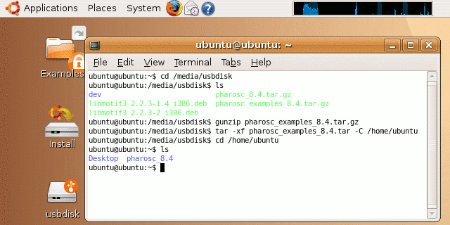
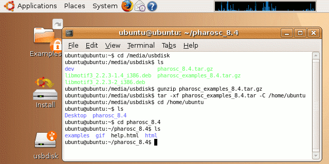
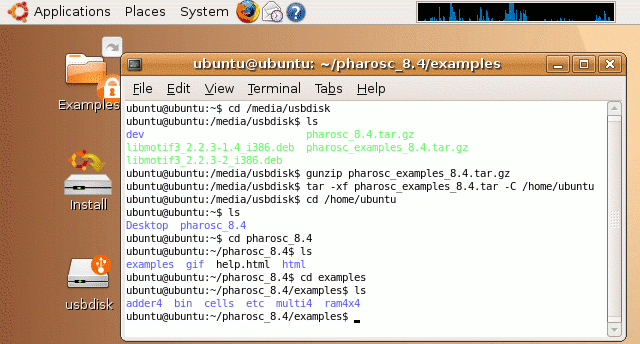

| vlsitechnology.org /Live CD help /unpacking library | |
Unpacking the library | |
Linux help
Windows help
Linux Live CD
The library is split into two archives: pharosc_8.4.tar.gz and pharosc_examples_8.4.tar.gz. The examples archive is supplementary to the regular library archive, and has a copy of all required files including the compiled binaries. So jobs can just be run and results just be viewed. The help text shows how to use the examples archive, but can equally be applied to the library archive.
I recommend unpacking the archive to the /home/ubuntu directory instead of onto the USB drive.
The archive is a gzipped tar file, so unpacking it means first gunzipping it and then untarring it. The untarring can set the destination with the -C option, as shown on the right.
The pharosc directory contains the examples, an html help file and html support directories. The help file is the same as the web one so that the library can be easily tested without an internet connection.
The library and the examples both sit under pharosc_8.4. Note however that together they are large … in excess of 500MB. They won't both sit together on a computer with 1GB of RAM, as the Live CD only allocates half of that to the user.


The examples directory has three examples: adder4, multi4 and ram4x4. The bin directory has all the commands; the cells directory all the cells and all their views; and the etc directory the configuration files for the different software programs, like the design rules for a particular technology.
